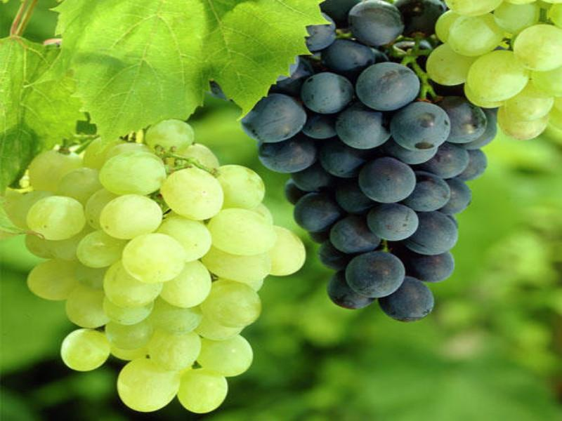

द्राक्ष विषयी माहिती

जमीन
योग्य निचरा असलेली, हलकी ते मध्यम, चुनखडीचे प्रमाण ८ टक्के पेक्षा जास्त नको तसेच विद्युत वाहकता २ डे.सी.
प्रति मीटर पेक्षा कमी नसावी. सामु ६.१ ते ७.५ च्या दरम्यान असावा.
हवामान
उष्ण व कोरडे, २५ ते ३५ सेल्सिअस तापमान, ६०० मि.मी पेक्षा कमी पर्जन्यमान
लागवडीचे अंतर
३ X १.५ मी वेलीची संख्या / हे २,२२२
लागवडीची वेळ/दिशा
डिसेंबर – जानेवारी किंवा जून – जुलै / दक्षिणोत्तर
लागवडीची पद्धत
अ) स्वमुळावरची लागवड ब) खुंटावरील लागवड असलेल्या ठिकाणी म.फु.कृ विद्यापीठाने डॉगरीज या खुंटाची शिफारस केली
आहे. डॉगरीज या खुंटाजी लागवड डिसेंबर- जानेवारीमध्ये करुन त्यावर पाचर कलम करावे. कलम करतेवेळी योग्य जात
निवडावी.
सुधारित जाती
थॉमसन सिडलेस, तास-ए-गणेश, सोनाका, माणिक चमन, शरद सिडलेस व फ्लेम सिडलेस, रेडग्लोब
वळण देण्याची पध्दत
टी (T) किंवा मंडप पध्दतीचा अवलंब करावा.
संजीवकाच्या मात्रा
फुले उमलण्यापूर्वी १० ते २० पी पी एम जिब्रॅलिक अॅसिडची फवारणी करावी. २५ टक्के टोप्या पडल्यानंतर २० पी पी एम
व ७५ टक्के टोप्या पडल्यानंतर ४० पी पी एम मध्ये घड बुडवणी करावी. फळधारण झाल्यानंतर ४० पी पी एमचा फवारा
द्यावा.
खताच्या मात्रा
डॉगरीज खुंटावर लागवड केलेल्या द्राक्ष पिकास प्रति हेक्टरी ६६६ कि. नत्र ४४४ कि. स्फुरद व ४४४ कि. पालाश
द्यावे. खरड छाटणीनंतर ७० टक्के नत्र (४६६ कि.) ५० टक्के स्फुरद (२२२ कि.) व १७५ कि. पालाश विभागुन द्यावे. खरड
छावणीनंतर उर्वरीत स्फुरद लगेच द्यावा तर नत्र १५ दिवसाना द्यावा. पाणी उतरण्याच्या अवस्थेपर्यत उर्वरीत
पालाशापैकी ७० टक्के द्यावा. तर पाणी उतरण्याच्या अवस्थेत उर्वरीत ३० टक्के द्यावा.
द्राक्षाची छाटणी
अप्रिल छाटणी किंवा खरड छाटणी-
द्राक्षवेलीच्या काडावरील डोळ्यामध्ये सूक्ष्मघड निर्मिती होण्यासाठी एप्रिल किंवा खरड छाटणी महत्त्वाची असते.
एप्रिल छाटणीनंतर ७ पानांवर गरजेनुसार सबकेन करावी.
ऑक्टोबर छाटणी –
द्राक्षाच्या माल काडीमधुन घड बाहेर येण्यासाठी ऑक्टोबर छाटणी करणे आवश्यक असते.
वेल व्यवस्थापन –
प्रतिवेलीवर काड्यांची संख्या – ३५ ते ४० प्रतिकाडीवर पानांची संख्या – १५ ते १६
गुणवत्तेशीर द्राक्ष उत्पादनासाठी – १) विरळणी २) गर्डलिंग ३) योग्य व्यवस्थापन ४) योग्य वेळी योग्य संजीवकाचा
वापर करावा.
एकात्मिक कीड व रोग व्यवस्थापन
खरड छाटणी तसेच ऑक्टोबर छाटणी वेळेवर करुन छाटलेल्या काड्या व पाने बांधावर न टाकता जाळून नष्ट कराव्यात.
छाटणीनंतर खोड व वलांड्यावरील मोकळी झालेली साल काढावी.
छाटणीनंतर लगेच वेलीच्या खोडांना आणि वलांड्यांना ब्लायटॉक्स ०.४ टक्के किंवा गेरू ३ किलो प्रति १० लिटर अथवा १०
टक्के बोर्डो पेस्ट + मेथोमील ३ ग्रॅम + क्लोरापायरीफॉस नुवान ३ मि.ली + १.५ मि.ली स्टिकर प्रति लिटर पाणी या
प्रमाणात पेस्टींग करावे.
फुलकिडींच्या नियंत्रणासाठी थायोमेथॉक्झाम २५ डब्ल्यू.जी. ३ ग्रॅम किंवा स्पिनोसॅड ४५टक्के एस.पी. ३. मि.ली
किंवा फिप्रोनील ८० टक्के डब्ल्यू.जी. १५ मि.ली या किटकनाशकाची १५ दिवसांच्या अंतराने २ फवारण्या कराव्यात.
नवीन फुट आली असताना निंबोळी अर्क ५ टक्के दोन फवारण्या आणि मॅलिथिऑन ०.१० टक्केची फवारणी करावी.
मण्यात पाणी उतरण्याच्या अवस्थेत मिलीबगचा प्रादुर्भाव वाढल्यास १५०० ऑस्ट्रेलियन बिटल ( क्रिप्टोलिमस भुंगेरे)
प्रति हेक्टरी २१ दिवसाच्या अंतराने २ वेळेस सोडावेत.
फवारणीच्या पाण्याचा पी.एच. ६.५ ते ७ असावा.
केवड्याच्या नियंत्रणासाठी मेटॅलॅक्झील –मॅन्कोझेब (०.२टक्के ) किंवा सायमोक्झॅनील- मॅन्कोझेब (०.२टक्के ) किंवा
फिनॅमिडन- मॅन्कोझेब (०.२५टक्के ) किंवा अझोक्जीस्ट्रॉबीन (२०० मिली/एकर) किंवा फेमॉक्झॅडोन + सायमोक्झॅनील (२००
मिली/एकर) किंवा क्रिसॉक्झीम येथील (२५० मिली/एकर) किंवा पायरॅक्लॉस्ट्र्रोबीन + मेटीरॅम (१.७५ ग्रॅम/लीटर) या
बुरशीनाशकांच्या ५ फवारण्या छाटणीनंतर १२ दिवसांचे अंतराने आलटून-पालटून कराव्यात.
भूरी रोगाच्या नियंत्रणासाठी ८०टक्के पाण्यात विरघळणारे गंधक २० ग्रॅम किंवा डिनोकॅप ५ मि.ली १० लिटर पाण्यात
किंवा ट्रायडेमिफॉन २५० ग्रॅम किंवा पेनकोनॅझॉल ५ मि.ली १० लीटर पाण्यात मिसळून फवारणी करावी.
तसेच भुरी रोगाच्या प्रभावी नियंत्रणासाठी खालीलप्रमाणे फवारणी नियोजन करावे.